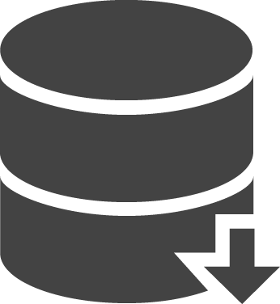

How to: Automatically Compose your backups
We showed how you could use Compose’s user interface to easily make manual backups of your databases on demand in the previous article. Of course, you can’t really include that sort of manual download in your daily processes so in this article we’ll show you how to use the Compose API to automate and integrate on-demand backup management into your processes.

As always, we like to show rather than tell, so we’re going to introduce a Node.js application, backupnow, which can be run from the command line. Given the name of a deployment, it can create an on-demand backup of that deployment and download it with no manual intervention. You may ask why it’s backing up a deployment rather than a database. Well, behind the scenes at Compose, databases live within deployments and a deployment can contain a number of databases. It’s those deployments that are backed up rather than the individual databases. It just happens that by default it’s one database to one deployment and the database and deployment have the same name, so the terms are almost interchangeable.
With that information delivered, we can start looking at our code. If you want to cut to just downloading and trying it out, skip to “Running the code”
Prelude to an API request
As with all applications, we have a number of things to set up or include before doing Compose API requests in Node.js.
var util = require('util');
var https = require('https');
var Client = require('node-rest-client').Client;
var fs = require('fs');
var accesstoken = fs.readFileSync("./accesstoken.txt");
var baseURL = "https://api.compose.io";
var headers = {
"Content-Type": "application-json",
"Accept-Version": "2014-06",
"Authorization": "Bearer " + accesstoken
}
var httpArgs = {
"headers": headers
}
var client = new Client();
We covered most of this in our previous guide to the API. The only change is that the baseURL is, post the API going generally available and MongoHQ becoming Compose, https://api.compose.io. To use the API, you need to generate a personal access token in the Compose user account management page. That generated token can be saved in a file called accesstoken.txt. This code will, when run, read the token from that file and include it in a set of HTTP headers used to authenticate each request.
We now start our work:
if (process.argv.length == 3) {
var deployment = process.argv[2];
var accountslug = "";
var backupId = "";
var backupFilename = "";
var timeoutTimer;
getAccount(function(err, slug) {
exitIfErr(err, "Could not get account");
accountslug = slug;
If we have a deployment name, taking the argument count up to three, we save it in a variable as we set up some global variables. The getAccount function we’ll detail later, but it establishes what the account’s short name, or slug, is and passes it to a callback function. If anything goes wrong, it’ll pass an error. The exitIfErr function in another helper which, as it says, exist the application after printing an error message, if there was an error returned. Otherwise, we save our account slug and we’re ready to make backup things happen.
Triggering the backup
Backups happen when a HTTP POST is made to a particular API endpoint/deployments/[accountslug]/[deployment]/backups. We’ll do that in the code now:
client.post(util.format("%s/deployments/%s/%s/backups", baseURL,
accountslug, deployment), httpArgs, function(backup, response) {
if (response.statusCode != 201) {
console.log(backup.error + " (" + response.headers.status + ")");
process.exit(1);
}
We check the response for errors before moving on. Only one backup can be in progress at a time, so when error that can be returned is a 503 Service Unavailable – the service isn’t down, it’s just buy with another backup. We exit the app anyway (and leave it as an exercise to the reader to retry until the service is available). When the backup has triggered, a “backup” data object is returned with various details about the backup that has been queued up. At this point we’re just interested in the backup id. We then print a “backup started” message and set up a timer.
backupId = backup.id;
console.log("Backup started for with id=" + backupId)
timerTimeout = setTimeout(backupReady, 15 * 1000);
});
Why the timer? Well, to find out if the backup is complete, we need to poll an endpoint for our in progress backup and wait for it to be complete. We do this every 15 seconds using the setTimeout function.
Polling the backup
The polling work is handled by our backupready function which will also be responsible to downloading the resulitng file. Let’s skip forward in the code to look at that:
function backupReady() {
clearTimeout(timerTimeout);
client.get(util.format("%s/accounts/%s/backups/%s", baseURL,
accountslug, backupId), httpArgs, function(backup, response) {
if (backup.status === "complete") {
console.log("Backup completed - now retrieving: " + backup.filename);
...
} else {
timerTimeout = setTimeout(backupReady, 15 * 1000);
}
})
};
The first thing backupReady does is clear the timeout function. Then it queries the “Get One Backup” endpoint to get the status of the backup. If that status comes back as complete, it would start downloading the backup (we’ve skipped that). If not, it reschedules the timer event to go off in another 15 seconds.
There actual download process is a little more complex than just getting a URL. First we need to retrieve the download link from the backup information. In the backup information returned by our query are a list of hyper links with specific purposes. We have to walk through that list looking for the one marked “download”:
for (var i = 0; i < backup.links.length; i++) {
link = backup.links[i];
if (link.rel == "download") {
And then we have to make another request. This is because the link we’ve found is an API link which will send a redirect to where the backup file can be retrieved. So we do a REST GET on the link, complete with our authenticating headers and then take the redirect’s location and download that:
client.get(link.href, httpArgs, function(doc, response) {
download(response.headers.location, backup.filename, function() {
console.log("Download complete");
});
});
}
And we exit naturally when the download is complete. The download function is a simple one found in many examples out there, with one difference. It uses the https library rather than http to download because Compose servers downloads over SSL:
var download = function(url, dest, cb) {
var file = fs.createWriteStream(dest);
var request = https.get(url, function(response) {
response.pipe(file);
file.on('finish', function() {
file.close(cb);
});
});
}
At the end of the code there’s also the getAccount and exitIfErr, the former method being especially useful when writing a Compose API application in Node as it encapsulates the process of working out the account name and then invokes a callback. We’re including them here for completeness…
function getAccount(callback) {
client.get(util.format("%s/accounts", baseURL), httpArgs,
function(accounts, response) {
if (response.statusCode != 200) {
if (accounts.hasOwnProperty("error")) {
callback(accounts.error, null);
} else {
callback(response.headers.status, null);
}
return;
}
callback(null, accounts[0].slug);
})
}
function exitIfErr(err, message) {
if (err != null) {
console.log(message + ": " + err);
process.exit(1);
}
}
Running the code
If you’ve skipped to here, downloaded the code from the backupnow repository which you’ll find in the Compose Examples Github pages. Once checked out, run npm install to ensure the node-rest-client package is installed. Get a personal access token by following the instructions on the authorization documentation then placing that in a file called accesstoken.txt. To test the code, you can run the program with no deployment name; it will list available deployment names to backup something like this:
$ node backupnow.js
You need to give a deployment as a parameter to this command
Available deployments are:
minty
exemplumdep
testing
$
Now that you can see some deployment names, you can use one to run a backup:
$ node backupnow.js exemplumdep
Backup started for with id=53f1e05553670f2d59001e6d
Backup completed - now retrieving: 2014-08-18_11-15-33_UTC_exemplum.tar.gz
Download complete
$
There will, depending on how large your database is, be delays between these lines being printed, first in generating the backup and then downloading it, but by the time it finishes you’ll have a backup as a tar.gz file in your directory.
Wrapping up
So, we’ve shown you how you use Node.js to take an on-demand backup of your Compose database. The process shown can, of course, be implemented in any language capable of make REST API requests and integrated into any systems you want to orchestrate your backup management.